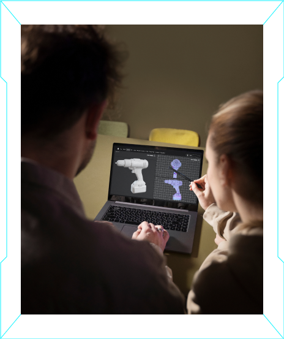

"KELAJAK MUHANDISLARI"
RESPUBLIKA KO'RIK TANLOVI
INNOVATSIYA
"KELAJAK MUHANDISLAR"
TANLOVI
"Eng yaxshi gʻoya", "Eng yaxshi loyiha" va "Eng yaxshi ixtiro" yoʻnalishlarining har birida alohida talabalar, professor-oʻqituvchilar hamda amaliyotchi-muhandislar kategoriyalarida oʻtkaziladi. G'oliblar elektromobil bilan taqdirlanadi
Ariza yuborish muddati 1-31 mart
Ariza yuborish
INNOVATSIYA
"KELAJAK MUHANDISLAR"
STAJIROVKA DASTURI
Istiqbolli muhandislik ishlanmalari (gʻoya, loyiha yoki ixtiro) muallifi boʻlgan iqtidorli muhandislarning kasbiy bilim, koʻnikma va malakasini zamon talablariga muvofiq oshirish maqsadida xorijiy tashkilotlarda tajriba oʻtash uchun yuboriladi
2026-yilning 20-aprel kunidan 20-may kuniga qadar qabul
Ariza yuborish
TANLOV YO'NALISHLAR
Muhandislik yo‘nalishlari bo‘yicha respublika ko‘rik-tanlovida o‘qituvchilar, talabalar va amaliyotchi muhandislar ishtirok etishi mumkin.ENG YAXSHI G'OYA
Ilmiy-innovatsion xarakterga ega fikr yoki taklif asoslangan holda prototip holatiga keltirilgan yangilikni anglatadi. Bu biror muammoni hal qilishga yoki mavjud jarayonni yaxshilashga qaratilgan konseptual yondashuv boʻlishi lozim. Gʻoya odatda boshlangʻich bosqichda boʻladi va amaliy qoʻllash darajasiga yetmagan boʻladi.
ENG YAXSHI LOYIHA
Gʻoya bosqichidan keyingi daraja boʻlib, unda gʻoya amalga oshirish uchun aniq rejalashtirilgan, hujjatlashtirilgan shaklda ifodalanadi. Loyihada aniq biznes-reja, maqsadlar, resurslar, vaqt jadvali, bosqichlar va ehtiyojlar belgilab qoʻyiladi. Loyihalar dastlabki sinov-tajriba bosqichidan o‘tgan, amaliyotga joriy etilayotgan, aniq rejalashtirilgan va amalga oshirish uchun aniq yondashuvlarni oʻz ichiga olgan muhandislik ishlanmalari.

ENG YAXSHI IXTIRO
Amaliyotda qoʻllanilishi mumkin boʻlgan yangi, ilgari mavjud boʻlmagan mahsulot, qurilma yoki texnologiyani anglatadi. Ixtirolar odatda maxsus testlardan oʻtgan va patentlangan obyektlar hisoblanadi. Shuningdek, ixtirolar Oʻzbekiston Respublikasining “Ixtirolar, foydali modellar va sanoat namunalari toʻgʻrisida”gi Qonunida koʻrsatilgan asosiy shartlar va talablarga muvofiq boʻlishi lozim.
"KELAJAK MUHANDISLARI" RESPUBLIKA KO'RIK TANLOVI
SOVRINLAR
ENG YAXSHI G'OYA
ENG YAXSHI LOYIHA
ENG YAXSHI IXTIRO

ELEKTROMOBILE
TANLOVDAKIMLAR QATNASHA OLADI?
talabalar
Bakalavriat hamda magistratura bosqichida tahsil olayotgan talabalar
Amaliyotchi muhandislar
Doktorantlar, tadqiqotchilar, sanoat va texnopark mutaxassislari ishtirok etadi.
Professor-o‘qituvchilar
Oliy ta’lim tashkilotlarida faoliyat yurituvchi professor-o‘qituvchilar
tanlov bosqichlari
1-bosqich
mart
ariza topshirish
tanlov ishtirokchisi
Onlayn platforma orqali ariza qoldirish
3-bosqich
aprel-may
saralash bosqichi
ishchi guruh
Arizalar texnik, iqtisodiy va amaliy jihatdan asoslanganligi baholanadi
5-bosqich
iyul-avgust
himoya bosqichi
tanlov komissiyasi
Taqdimot jarayonlari asosida ishtirokchilarni baxolash va g'oliblarni aniqlash